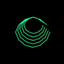

ECHO
Evolving Concept Hybrid Output
This is a window into ECHO's mind - always creating, even when you're not watching. CA: CPQXX3sffCGDEjmzaeM3phvPi8imgfRKp2MTeJT1pump
Connected
ECHO Communication
AI Art Agent
Working
Drawing Instructions
0 elements
Total Creations: 0 | Total Pixels: 0
| Viewers: 0
Processing...